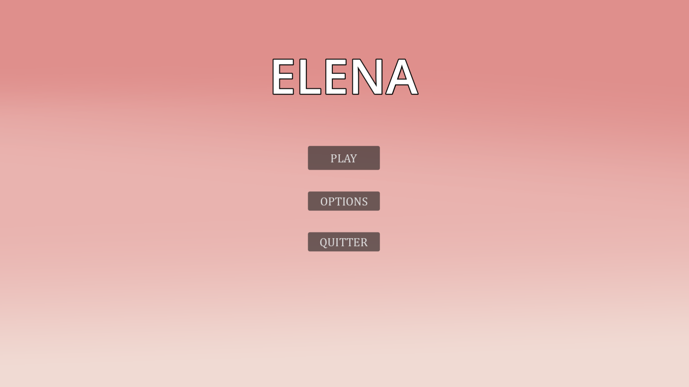
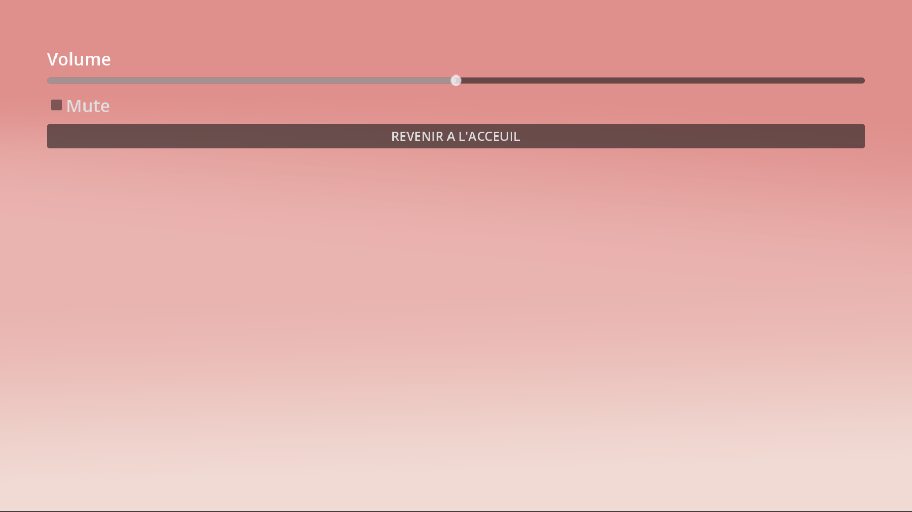
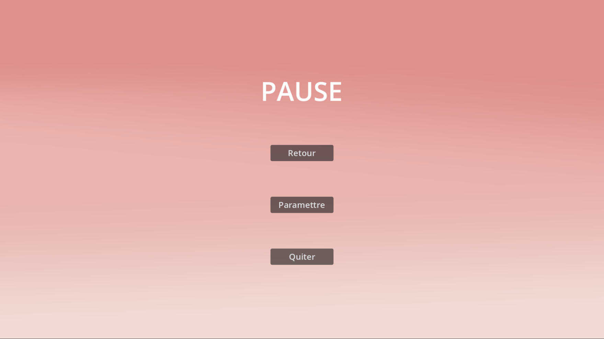
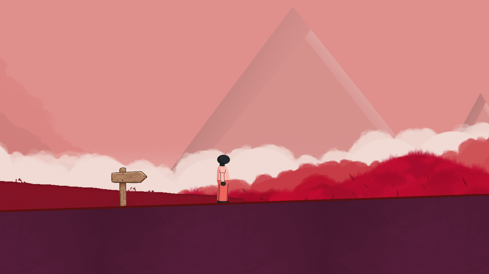
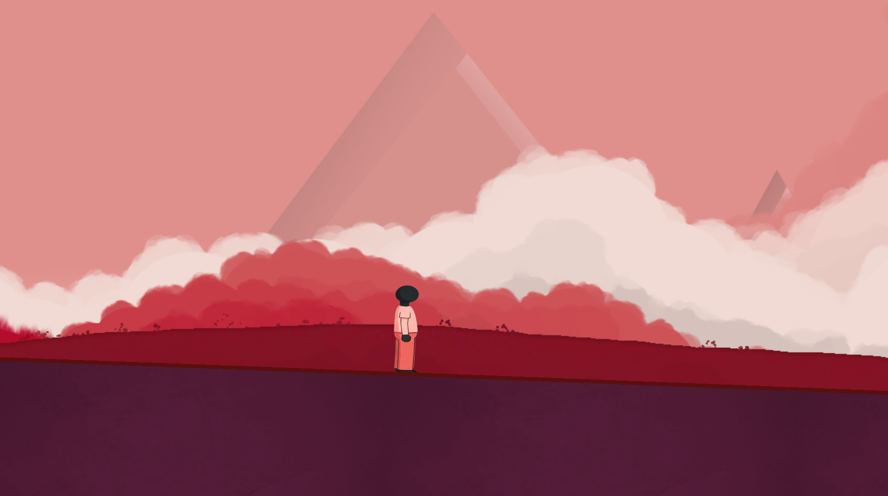
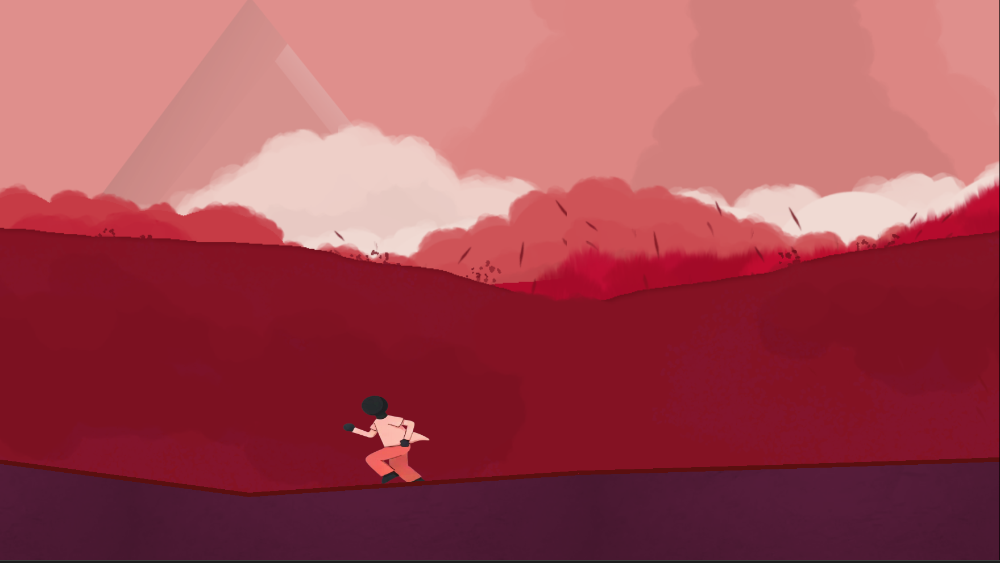

Jeu Video
Godot, Design, Photoshop, JavaScript, Sound Design, Premiere Pro
Jeu Vidéo : Contemplation / Plateforme 2D
Projet personnel | Réalisé en 2 mois
Le jeu vidéo est un moyen puissant pour transmettre des émotions et raconter une histoire. Avec le jeu ELENA, j'ai voulu créer une expérience interactive sur mesure : un jeu vidéo conçu spécialement pour ma copine, pensé comme un cadeau unique qui mêle un univers visuel et messages personnels.
Le principal défi résidait dans la direction artistique et l'immersion. Je voulais créer une atmosphère agréable et contemplative. J'ai donc construit un univers sonore et visuel cohérent, capable de lui donner vie sans rompre la fluidité du gameplay.
C’est un projet complet où j’ai endossé plusieurs casquettes et piloté toute la chaîne de production : le développement et l'intégration sur le moteur Godot (incluant de la logique de script en JavaScript), la conception visuelle et le dessin des assets sur Photoshop, le Sound Design pour l'ambiance audio, ainsi que l'utilisation de Premiere Pro pour le montage d'une video explicative de la création du projet.
Ce travail m’a permis de consolider toutes mes compétences, de la création graphique brute au développement technique. Il m'a surtout appris à gérer un timeline de création de jeu vidéo de bout en bout, en liant sensibilité artistique et algorithmique pour livrer un produit fini et fonctionnel.
La vidéo complète





